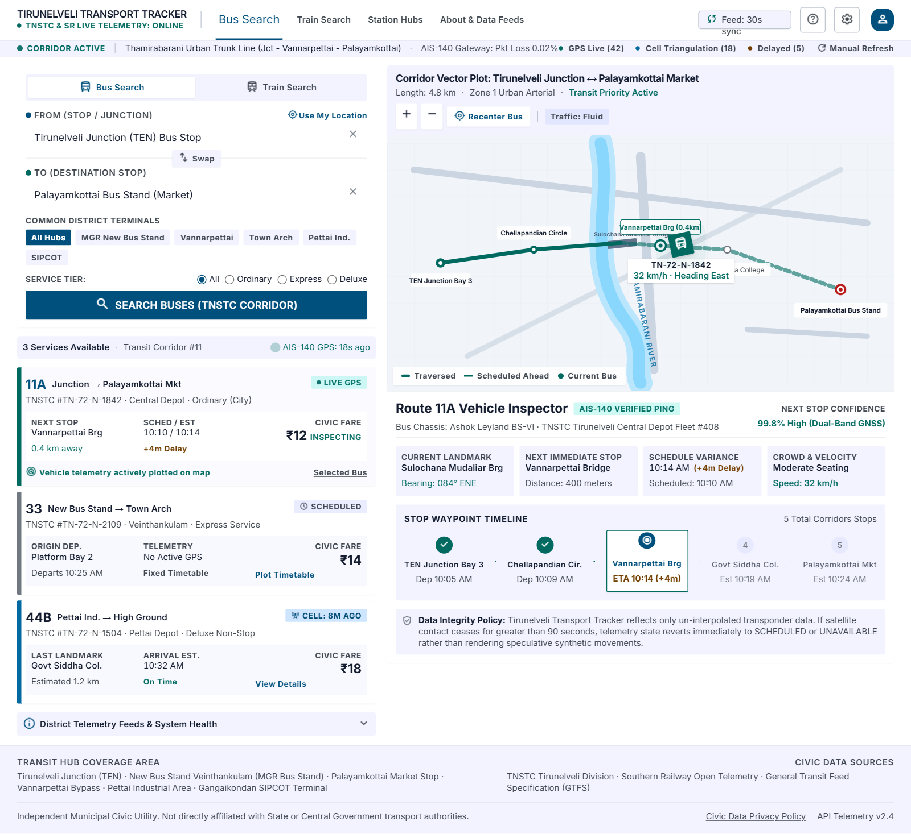

NELLAI TRANSIT
TRACKER.
A civic-technology public transport tracker for Tirunelveli (Nellai), Tamil Nadu — unifying TNSTC local bus corridors, 5-digit Southern Railway status checks, Haversine stop proximity maps, and an honest data-freshness policy with zero fake GPS dots.

HONEST CIVIC TRANSIT DATA FOR TIRUNELVELI COMMUTERS.
Many apps animate synthetic buses on maps without real feeds. Nellai Transit enforces strict local-eligibility checks and surfaces verified freshness labels on every route and locomotive.
20 Verified District Stops
Indexes key Tirunelveli hubs (TEN Junction, VBS, PCO, TSI, Palayamkottai, Anna Univ, Nellaiyappar Temple).
Haversine Stop Proximity
Finds nearest bus stops using device coordinates, Tamil/English landmarks, or origin-destination corridor filters.
5-Digit Train Eligibility
Checks Southern Railway services (e.g., 20666 Vande Bharat, 12632 Nellai Express) with platform/delay info & WAP-7 CRIS telemetry.
Non-Local Exclusion Filter
Detects out-of-district trains (e.g., 12621 Tamil Nadu Express) explicitly instead of misreporting them locally.
Strict Provenance Tags
Classifies every metric as LIVE, RECENT, SCHEDULED, ESTIMATED, STATIC, or UNAVAILABLE — zero fabricated GPS vehicles.
Dual PostgreSQL + SQLite
SQLAlchemy ETL pipeline seeding structured corridor timetables cleanly into SQLite local or PostgreSQL 16.
HOW IT WORKS.
Modular provider layer (BusStop, BusRoute, BusTracking, TrainSchedule, TrainStatus) queries SQLAlchemy Dual DB and renders Stitch civic UI.
Seed & ETL
Tirunelveli stops & TNSTC/SR timetables.
SQLAlchemy
PostgreSQL 16 / SQLite dual storage.
Providers
Haversine search & eligibility filters.
Provenance
LIVE / SCHEDULED / ESTIMATED tagging.
Civic UI
Stitch desktop + mobile Folium views.
APPLICATION SCREENSHOTS.
Live screens captured from the running application. Click any image to view full size, or follow setup instructions in the GitHub repository.
TRANSIT DATA GOVERNANCE & ELIGIBILITY RULES.
Key modules, rules, safety checks, and automated test results documented in the repository.
| Provider / Rule | Coverage / Logic | Civic Guarantee |
|---|---|---|
| BusStopProvider | 20 verified stations + Tamil/landmark lookup | Haversine distance sorting |
| TrainScheduleProvider | 10 SR trains incl. 20666 & 12632 | Filters out non-TEN trains transparently |
| Freshness Provenance | 6 explicit tags: LIVE .. UNAVAILABLE | Zero synthetic moving vehicles |
| Automated Testing | tests/ analytics, ETL & Tirunelveli fixtures | 37 / 37 Passed (100%) |
CORE TECHNOLOGIES.
Frameworks, databases, visualization tools, and testing libraries used in Nellai Transit Tracker.
FUTURE ENHANCEMENTS.
Upcoming improvements planned for Nellai Transit Tracker.
EXPLORE SOURCE & DOCS.
View the complete codebase, sample datasets, quick-launch scripts, and automated test suites on GitHub.